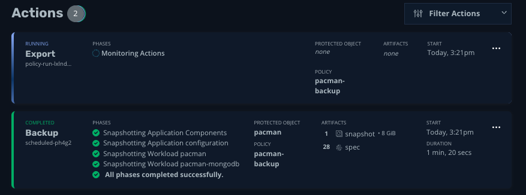

Lab 3 - Backup and Restore a Workload
1. Peform a backup
-
Under Policies, click run once on the policy you created in lab 2, entitled pacman-backup
 Figure 1. Run Once
Figure 1. Run Once -
When prompted, leave the “Snapshot Expiration (Optional)” field blank and select, Yes, Continue
 Figure 2. Run Once Continue
Figure 2. Run Once Continue -
Click < Dashboard in the upper-left corner to monitor the action on the main dashboard
 Figure 3. Running Action
Figure 3. Running Action -
Click on the running action to monitor its detailed status
Figure 4. Action Details -
After a few minutes, all steps of the action should run successfully
 Figure 5. Action Completed
Figure 5. Action Completed
2. Simulated Attack
-
Return to the Pacman tab in your browser and click “View Highscore List” or if the game is playing, hit the space bar and click High Score
 Figure 6. Leaderboard
Figure 6. Leaderboard -
From the bastion host, drop the
pacmandatabase from MongoDB that holds your highscore:export MONGODB_ROOT_PASSWORD=$(oc get secret -n kasten-lab-{user}-pacman pacman-mongodb -o jsonpath="{.data.mongodb-root-password}" | base64 --decode) oc exec -it deploy/pacman-mongodb -n kasten-lab-{user}-pacman -- mongosh pacman --authenticationDatabase admin -u root -p $MONGODB_ROOT_PASSWORD --eval 'db.dropDatabase();'This command is simulating a data compromise event, which could be something as innocent as an administrator > accidentally dropping a table or database, or as nefarious as a ransomware attack -
Return to the Pacman tab in your browser and refresh the page. Click High Score. !!OH NO YOUR HIGH SCORE IS GONE!!
 Figure 7. no high scores
Figure 7. no high scores
3. Recover Our Score
-
No fear, let’s restore our backup. Click on the Kasten tab in your browser and return to the main dashboard by clicking on Dashboard
-
Click Compliant in the Applications modal.
Figure 8. Compliant -
Click Restore on the Pacman application to restore from backup
 Figure 9. Restore
Figure 9. Restore -
Click the most recent backup.
There are two options from which to restore. The blue box is the local cluster backup, whereas the green box with the title "Exported" is the exported backup which is stored on our S3 object storage. In the event of an accidental deletion, restoring from local cluster backup is sufficient, but if we were facing the result of a ransomware attack we would likely want to restore from the S3 bucket. For the purposes of this lab, we’ll just the local cluster backup since restore time will be slightly faster Click Today, #:## in the blue box to restore from the local cluster snapshot
 Figure 10. Restore Today
Figure 10. Restore Today -
Scroll down and click Deselect All Artifacts then click the tick box next to the pacman-mongodb item under the Snapshot (1) section
 Figure 11. Restore Volume
Figure 11. Restore Volume -
Click Restore.
-
Click Restore when prompted.
-
Return to the Dashboard by clicking on the Dashboard link in the upper left corner
-
Click on the running Restore Action to monitor the action
-
After a minute or two all phases should complete successfully
Figure 12. Restore Completed -
Return to the pacman tab and refresh the browser tab. Click High Score. Our high score is back! REJOICE!
Figure 13. Leaderboard
4. Takeaways
-
Kasten automatically interrogates and detects namespaces on the cluster
-
Backup jobs are configured on a per-namespace basis and can be configured quickly
-
We can easily monitor actions via the Kasten UI
-
We have granular control on how we restore from backup, including whether from on-cluster or exported storage
-
We have granular control over which components we wish to recover and/or overwrite
Continue to LAB 4